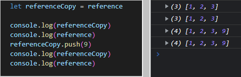

Variables can stores Value or Reference to a value
Values - primitives - str, number, boolean, null...
References - complex - array, object...

Reference points to same value somewhere. If you make copy of reference and change its value, it will change value for all references below change point. Because all references point to same value.
But referenced values can be copied in many ways and created new array preserving original reference (common in React)